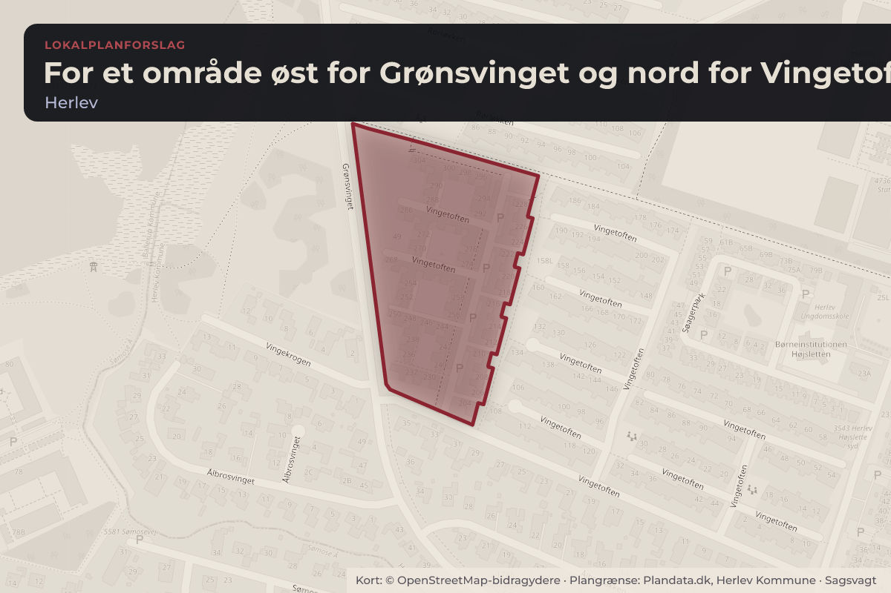
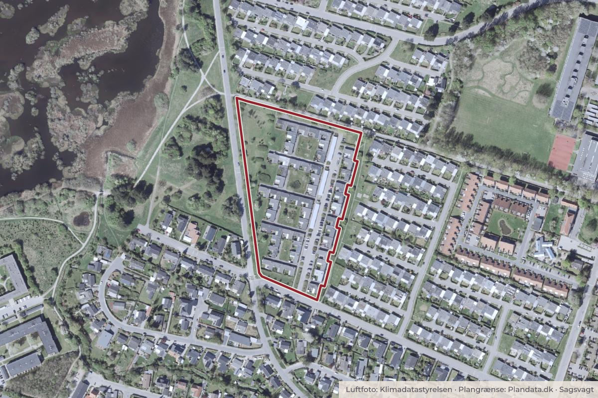

Besluttet 12. august, Økonomi- og Planlægningsudvalget, Herlev
Forslag til lokalplan 34-1 for et område øst for Grønsvinget og nord for Vingetoften
Ved grundejerforeningen Herlev Højslette er der igangsat opførsel af fire carporte af hver ca. 190 m2 uden byggetilladelse, og i strid med den gældende lokalplan. Den 8. april 2026 blev arbejdet med et lovliggørende lokalplantillæg igangsat.
Byggeri og lokalplanerKultur og fritid

Kort: © OpenStreetMap-bidragydere. Plangrænse: Plandata.dk, Herlev Kommune.

Har du et billede fra For et område øst for Grønsvinget og nord for Vingetoften? Send det til os
Kort fortalt
- Forslaget
- Forslag til lokalplan 34-1 for et område øst for Grønsvinget og nord for Vingetoften sendes i
- Lokalplanforslaget ikke miljøvurderes.
- Hvem
- Økonomi- og Planlægningsudvalget, Herlev Kommune
- Hvornår
- Onsdag 12. august 2026
- Status
- Besluttet. Ad 1.: Tiltrådt med 6 stemmer for (A, C, I, Ø) og 1 stemme imod (F). SF - Socialistisk Folkeparti (F) ønsker følgende stemmeforklaring: SF stemmer nej til forslag til lokalplan 34-1, da intentionen alene handler om at lovliggøre et ulovligt byggeri af carporte i det allerede opførte omfang og materialevalg.Beslutningen er forkortet her. Læs hele beslutningen
Læs hele sagen Kommunens egen tekst
Indstilling
FORVALTNINGEN INDSTILLER,
1. At forslag til lokalplan 34-1 for et område øst for Grønsvinget og nord for Vingetoften sendes i
fire ugers høring.
2. At lokalplanforslaget ikke miljøvurderes.
Sagsfremstilling
Forslag til lokalplan 34-1 for et område øst for Grønsvinget og nord for Vingetoften er et tillæg til lokalplan
34 af samme navn. Tillægget regulerer alene muligheden for, at etablere fire fælles carporte og
dertilhørende skure i området samt regnvandshåndtering.
Forslag til lokalplan 34-1 regulerer carportenes omfang og placering, samt carportenes fremtræden som
lette og ensartede bebyggelser, der ikke skaber genskin til gene for områdets beboere.
Lokalplanen er vedlagt som bilag, men kan også læses på lokalplanportalen her:
https://herlev.viewer.dkplan.niras.dk/DKplan/DKplan.aspx?LokalplanId=189
Kommuneplan
Forslaget indebærer ikke ændringer af kommuneplanrammerne for lokalplanområdet i forhold til
Kommuneplan 2023 eller Forslag til Kommuneplan 2026, som er i offentlig høring i perioden fra den 24.
marts til den 26. maj 2026.
Miljøvurdering
Lokalplanen er screenet efter lov om miljøvurdering af planer og programmer og af konkrete projekter
(VVM), jf. lovbekendtgørelse nr. 4 af 3. januar 2023. Herlev Kommune vurderer, at lokalplanen er
undtaget for miljøvurderingspligten, da lokalplanen ikke ændrer væsentligt på de eksisterende forhold.
Høring af forslag til lokalplan
Forslag til lokalplan sendes i offentlig høring i fire uger, forventeligt i september. I perioden planlægges
der at afholdes borgermøde. Efter afsluttet offentlig høring forelægges de indkomne høringssvar til
planforslaget og forvaltningens vurdering af høringssvarene samt eventuelt ændringsforslag til den
endelige lokalplan til politisk behandling.
Økonomi
Intet at bemærke.
Beslutning
Ad 1.: Tiltrådt med 6 stemmer for (A, C, I, Ø) og 1 stemme imod (F).
SF - Socialistisk Folkeparti (F) ønsker følgende stemmeforklaring:
SF stemmer nej til forslag til lokalplan 34-1, da intentionen alene handler om at lovliggøre et
ulovligt byggeri af carporte i det allerede opførte omfang og materialevalg. Hvis formålet havde
været at imødekomme en ansøgning om udskiftning af de tidligere carporte i træ med nye carporte
– i samme omfang og udført i træ og matchende de bagvedliggende boliger i farvevalg, ville SF
have stillet sig positivt.
Ad 2.: Tiltrådt.
Beslutning fra Miljø-, Klima- og Teknikudvalget , 15. juni 2026, pkt. 79:
Ad 1.: Tiltrådt med 6 stemmer for (A, C, V, Ø) og 1 stemme imod (F).
SF - Socialistisk Folkeparti (F) ønsker følgende stemmeforklaring:
SF stemmer nej til forslag til lokalplan 34-1, da intentionen alene handler om at lovliggøre et
ulovligt byggeri af carporte i det allerede opførte omfang og materialevalg. Hvis formålet havde
været at imødekomme en ansøgning om udskiftning af de tidligere carporte i træ med nye carporte
– i samme omfang og udført i træ og matchende de bagvedliggende boliger i farvevalg, ville SF
have stillet sig positivt.
Ad 2.: Tiltrådt.
Kilde: Herlev Kommune, Økonomi- og Planlægningsudvalget, referat fra mødet onsdag 12. august 2026, punkt 4. Læs den originale sag hos kommunen.